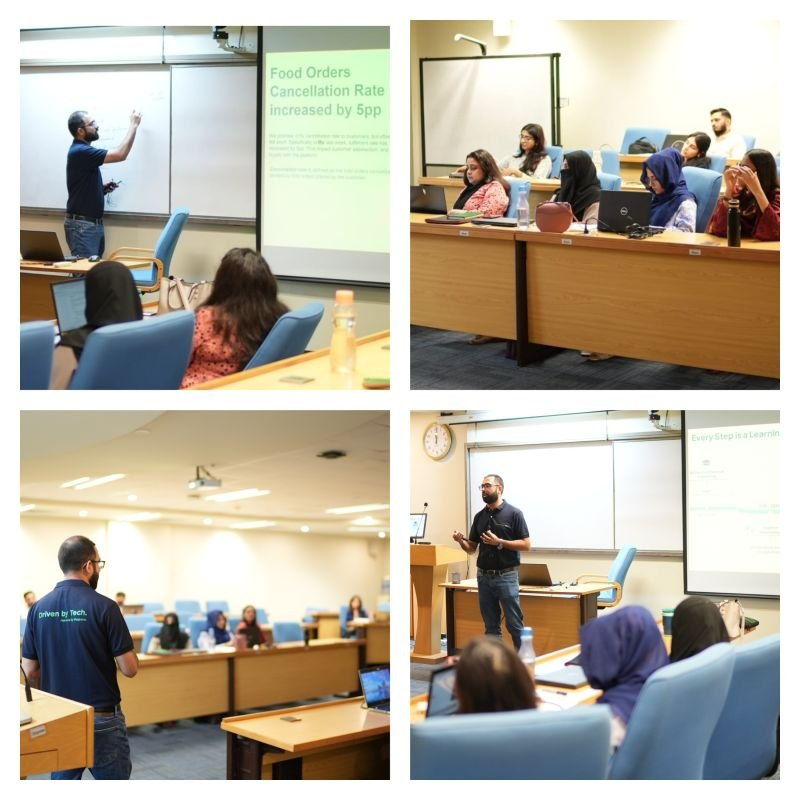

Senior Product Analyst at Careem (an Uber & e& company). I take on the product and operational problems a business hasn't cracked yet, and build the frameworks, metrics, and experiments that turn them into strategy leaders act on — then build the AI tools that put that analysis in more hands.
Expertise
Most of my work is a deep dive into a product or operational problem that doesn't yet have a clean answer — then building the framework, metrics, and experiments that crack it and shape what the business does next. Eight-plus years applying that across on-demand delivery and the energy sector. The domains change; the way of working doesn't.
Taking on an initiative that has no clean answer yet, and building the framework that cracks it: framing the problem, finding the lever, and turning the analysis into strategy leaders act on.
A/B and switchback design, causal read-outs, and honest guardrails. I founded and chair an org-wide Experiment Review Board to raise the quality bar on how decisions get tested.
Defining the metrics a business runs on — from the North Star down to the inputs that drive it — and standardizing them into governed data marts, so the whole org measures success the same trusted way.
Building AI agents and self-serve tools that let non-technical teams answer their own data questions — scaling analytics across an organization while keeping judgment in the loop.
Writing
Write-ups of analytical problems I've worked — each one a messy, real question that didn't have a clean answer, and the framework I built to crack it. Written from the analyst's chair, honest about the limits. The examples come from on-demand delivery; the thinking travels.
Defining the single metric an entire organisation orients around — from a customer-research question, to a validated leading indicator, to the input-lever decomposition and org-wide adoption that made it the way teams prioritise.
Defining the metric a business acts on when demand outpaces supply — and building the tiered, experiment-tuned response that decides when to intervene. A study in turning an ambiguous problem into a measurable one.
A stage-by-stage attribution framework that turns one blunt "late" into a specific, ownable cause — then routes each cause to the team and lever that can actually move it. Analysis as a decision-routing system.
How a business decides which orders should share a resource — measuring a cost-versus-experience trade-off honestly, tuning it offline in a simulator, then confirming it with a switchback experiment.
Most AI analytics agents fail not because of the model — they fail because of the data dictionary. Lessons from building a natural-language analytics agent that lets non-technical teams answer their own questions.
Speaking

A guest lecture at Karachi School of Business & Leadership (KSBL) — my alma mater — walking students through a real case study: turning an operational problem into hypotheses, experiments, and decisions.
Covered how analytics shapes product and business strategy, and the path from individual contributor to analytics leadership.
See the post ↗About
I'm a Senior Product Analyst at Careem (an Uber & e& company), based in Riyadh, where I lead analytics for logistics and operations and mentor a team of analysts. My work is about driving product and business strategy through data — untangling the initiatives that don't yet have a clean answer, finding the lever that matters, and turning that analysis into decisions leadership acts on, rather than dashboards that get glanced at.
In practice that has meant defining a company-wide North Star Metric that teams across the org now measure success against, founding and chairing the Experiment Review Board that sets how decisions get tested, partnering with engineering to standardize core metrics into governed data marts, and building AI-driven self-serve analytics tools. The through-line is influence at the level of how the organization decides, not just individual analyses — work that has also driven $3M+ in annual cost-margin savings.
Before delivery, I spent around five years in the energy sector — wind power and electrical utilities — which is where I first learned that the core of good analytics translates across industries. That range is deliberate: the strongest analysis often comes from bringing an outside perspective to a new domain. I hold a Master of Business Analytics and a Bachelor of Electrical Engineering.